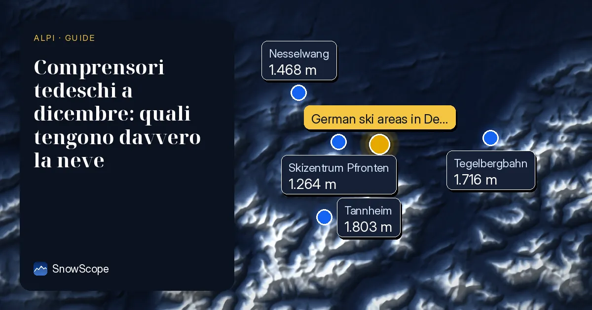

Comprensori tedeschi a dicembre: quali tengono davvero la neve
In una tipica settimana a metà dicembre, solo due dei sette comprensori sciistici tedeschi che abbiamo controllato hanno neve abbastanza profonda per sciare in sicurezza nella maggior parte degli anni: il ghiacciaio della Zugspitze in vetta, e l'alto Fellhorn sopra Oberstdorf. Gli altri sono più economici da visitare ma molto meno certi, soprattutto alle loro basi.
Le previsioni neve in tempo reale per German ski areas in December nell'app SnowScopeAltezza neve, allerte powder e mappa 3D, gratis.
Dove la neve è affidabile
Entro il 15 dicembre, la vetta della Zugspitze (2.627 m) ha 30 cm o più in quasi ogni inverno—100 % dei nostri 46 inverni di registrazioni. A mezza montagna (1.811 m) raggiunge ancora quella profondità nel 89 % degli inverni. Il Fellhorn/Kanzelwand sopra Oberstdorf racconta una storia contrastante: il 93 % degli inverni vede 30 cm in vetta (1.965 m), ma solo il 59 % a mezza montagna (1.441 m).
Il Garmisch-Classic si colloca a metà strada: 89 % in vetta (2.047 m) ma scende al 48 % a mezza montagna (1.387 m). Una volta passati alle colline bavaresi più piccole, le probabilità a mezza montagna crollano drasticamente. Sudelfeld raggiunge il 39 % a 1.186 m, Brauneck solo il 28 % a 1.154 m, e Oberjoch il 28 % a 1.342 m. Il Feldberg nella Foresta Nera a malapena rientra: 17 % a mezza montagna (1.189 m) e solo il 24 % in vetta (1.446 m).

Quanto paghi al giorno
I tre comprensori glaciali e alpini costano più o meno lo stesso: Zugspitze 70,50 EUR online, Garmisch-Classic 69 EUR, e Fellhorn/Kanzelwand 72,90 EUR. Le colline più piccole sono più economiche: Sudelfeld, Brauneck e Oberjoch costano tutti 55 EUR al giorno. Il Feldberg usa prezzi dinamici, quindi il costo varia con la domanda.
Se stai sei giorni, l'area di Oberstdorf (Fellhorn e Kanzelwand) offre 344,50 EUR in Avvento (fino al 20 dicembre), più economico degli 382,80 EUR tutto l'anno. Oberjoch vende sei giorni per 278 EUR. Sudelfeld e Brauneck condividono uno skipass a 208 EUR che copre quattro giorni di sci in sei giorni di calendario. Né Zugspitze né Garmisch-Classic vendono un pacchetto di sei giorni.
La trappola della neve sottile
I comprensori più bassi presentano un rischio di tempistica. La base di Brauneck (715 m) ha in media solo 9 cm il 15 dicembre; la base di Sudelfeld (865 m) mantiene 15 cm. Nessuna base ha visto 30 cm in una singola settimana di Natale in tutta la nostra registrazione. Il Feldberg, nonostante la sua altitudine, è ancora più stretto: 4 cm in base e solo 8 cm in vetta (1.446 m) in un tipico giorno a metà dicembre.
Questi non sono cattivi comprensori sciistici. Sono cattivi impegni a dicembre. Con uno skipass di 55 EUR al giorno e un'ora di auto da Monaco, funzionano solo dopo una nevicata fresca. Usa la mappa di SnowScope e i rapporti giornalieri di ogni comprensorio per decidere la mattina, o il giorno prima, se fare il viaggio.
Valore durante il mese
La Zugspitze vince per valore: prezzi quasi identici ai comprensori più piccoli, ma neve che arriva ogni anno entro metà dicembre. Lo sconto di Avvento del Fellhorn/Kanzelwand (344,50 EUR per sei giorni) lo rende competitivo se hai una settimana da passare e usi lo skipass collegato a Oberstdorf e nel Kleinwalsertal.
Per una singola giornata invernale, il divario tra affidabile e rischioso vale gli euro extra. Prenota la Zugspitze online e sciherai. Aspetta una previsione di tempesta e rischia su Sudelfeld o Oberjoch, e potresti sprecare benzina e un giorno di ferie.
La settimana di Natale sembra migliore
Le probabilità migliorano mentre dicembre prosegue. Entro la settimana di Natale (22-28 dicembre), la mezza montagna della Zugspitze sale al 96 % di probabilità di 30 cm, e la mezza montagna di Garmisch-Classic sale al 61 %. Anche Brauneck e Sudelfeld migliorano al 37-39 % a mezza montagna. Il Feldberg, tuttavia, rimane debole: 24 % in vetta.
Se sei flessibile, rinvia il tuo viaggio fino alla settimana di Natale. Se devi andare a metà dicembre, vai in alto: gli ultimi impianti della Zugspitze, Fellhorn o Garmisch-Classic mantengono neve quando i pendii più bassi non lo fanno.
Consigli per sciatori
- Una giornata a metà dicembre: prenota la Zugspitze online; l'altopiano siede sopra le nuvole e la neve quasi sempre giace spessa.
- Una settimana a dicembre: prendi lo skipass di Avvento di Oberstdorf (Fellhorn e Kanzelwand) e scia le piste superiori; i fondovalle sono più sottili ma le mezzomontagne e le vette danno risultati.
- Prealpi bavaresi e Foresta Nera: visita solo dopo una tempesta o nella settimana di Natale; controlla la mappa della neve prima di partire da casa.
- Se scii fuoripista, leggi il bollettino valanghe bavarese, soprattutto sui terreni esposti della Zugspitze dove il vento e la neve sottile nascondono le rocce.
- Evita dicembre interamente al Feldberg a meno che una grande tempesta non sia appena passata; nella maggior parte degli anni la copertura è inaffidabile fino a gennaio.
Su questi numeri
Le altezze neve delle località sono la neve più alta sui pendii superiori alla data indicata; sono stime per un'area, non una misura in un punto. Le previsioni possono cambiare. Leggi sempre il bollettino valanghe ufficiale prima del fuoripista.
Cita questo articolo
Per ricerca, didattica o stampa: numeri e grafici sono liberamente riutilizzabili con licenza CC BY 4.0 citando così.
SnowScope (2026), Comprensori tedeschi a dicembre: quali tengono davvero la neve, https://snowscope.app/blog/it/2026/11/germany-ski-areas-december-which-hold-snow.html, consultato il 2026-11-14
SnowScope (Atlas Labs). (2026, November 14). Comprensori tedeschi a dicembre: quali tengono davvero la neve. SnowScope snow reports. https://snowscope.app/blog/it/2026/11/germany-ski-areas-december-which-hold-snow.html
BibTeX
@misc{snowscope2026germanyskiareasdecemberw,
author = {{SnowScope (Atlas Labs)}},
title = {Comprensori tedeschi a dicembre: quali tengono davvero la neve},
year = {2026},
month = nov,
howpublished = {\url{https://snowscope.app/blog/it/2026/11/germany-ski-areas-december-which-hold-snow.html}},
note = {Published 2026-11-14 14:24 UTC; accessed 2026-11-14}
}· CC BY 4.0 · Metodi, dati e strumenti →
Segui German ski areas in December
Gratis: un messaggio quando arriva la neve e il meteo ogni mattina.